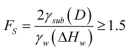

●以下內容來自於建築物基礎構造設計規範
●側向壓力平衡(內擠分析)擋土壁應有足夠之貫入深度，使其於兩側之側向壓力作用下，具足夠之穩定性。擋土壁之貫入深度D，可依下列公式計算其安全性:
FPLP≧FALA
FA = 最下階支撐以下之外側作用側向壓力之合力(tf/m)。計算土壓力時，強度參數必須先除以抵抗底面剪力破壞之安全係數，亦即 c / Fs，tanΦ / Fs。
LA = FA作用點距最下階支撐之距離(m)
FP = 最下階支撐以下之內側作用側向壓力之合力(tf/m)。計算土壓力時，強度參數必須先除以抵抗底面剪力破壞之安全係數，亦即 c / Fs，tanΦ / Fs。
LP = F
Fs = 強度安全係數，必須至少≧1.2
開挖底面下方土層係厚層黏土時，應檢討其抵抗底面隆起之穩定性。可依下列公式計算其安全性:
Mr＝抵抗力矩(tf-m/m)
Md＝傾覆力矩(tf-m/m)
Su＝黏土之不排水剪力強度(tf/m2)
X=半徑(m)
W=開挖底面以上，於擋土設施外側Ｘ寬度範圍內土壤重量與地表上方載重(q)之重量和(tf/m)
如擋土壁下方為透水性佳之砂質土壤，且擋土壁未貫入不透水層時，即應檢討其抵抗砂湧之安全性。分析方法可用滲流解析方式、臨界水力坡降解析方式、或以下列兩公式分別計算之，擇其中貫入深度最大者為設計依據。
●Terzaghi滲流理論

●臨界水力坡降理論
γsub = 砂質土壤之有效單位重(tf/m3)
D = 擋土設施之貫入深度(m)
γw =地下水之單位重(tf/m3)
△Hw擋土設施內外兩側地下水位之水頭差(m)
開挖底面下方土層中，如有不透水層且承受壓力水頭者，應檢討開挖過程中此不透水層抵抗上舉破壞之安全性，可依下列公式計算：
γti = 不透水層底面以上之各土層土壤單位重(tf/m3)
hi = 不透水層底面以上之各土層厚度(m)
Uw = 透水層頂部之水壓力(tf/m2)
1.因我們不確定我們的水壓隨深度變化線是否正確，故我們以保守算法斜率為1(水單位重1(𝑡𝑓/𝑚^3))的方式進行地下水壓力計算
2.超負荷載重我們以簡單的方式進行計算(以無限負載方式計算)